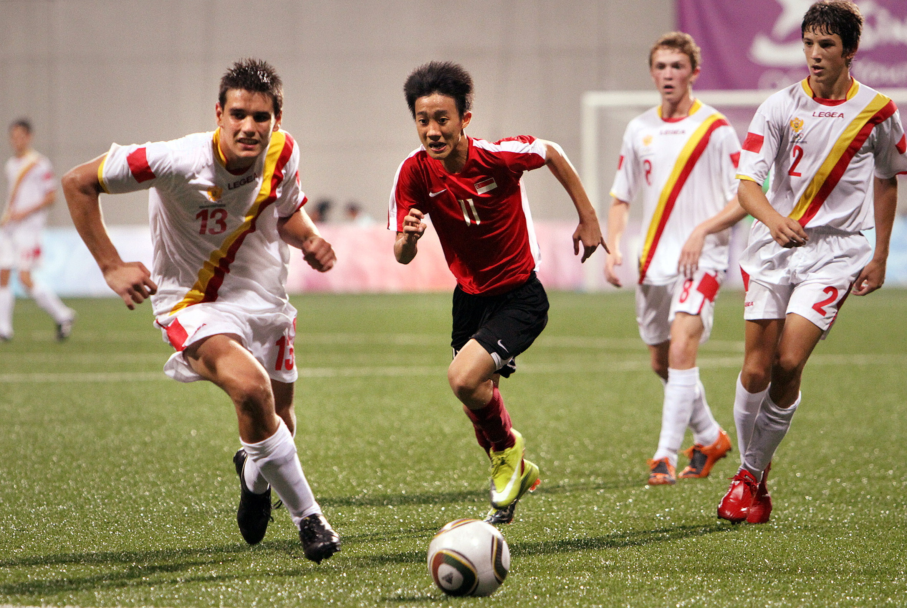
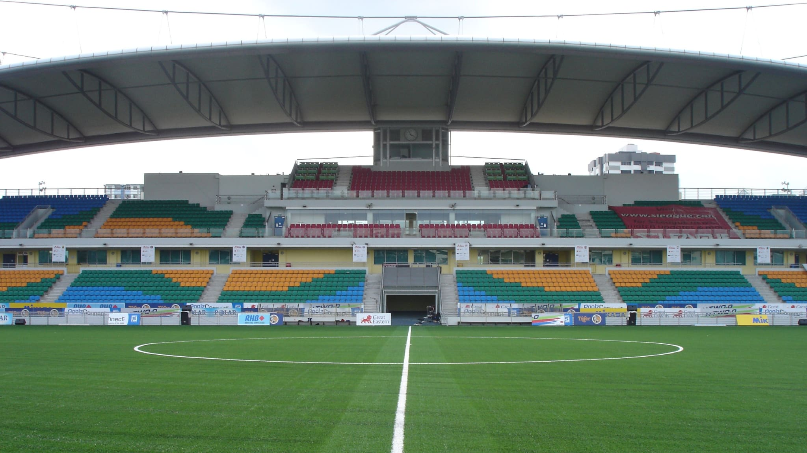
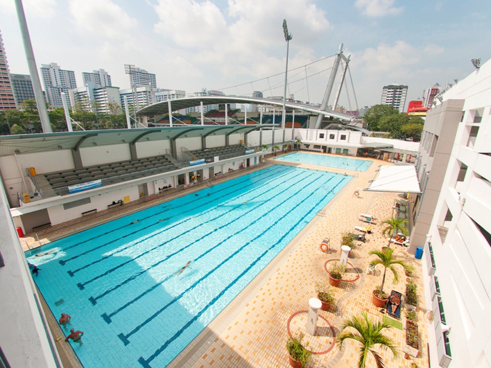
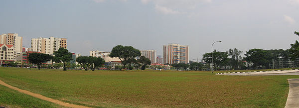
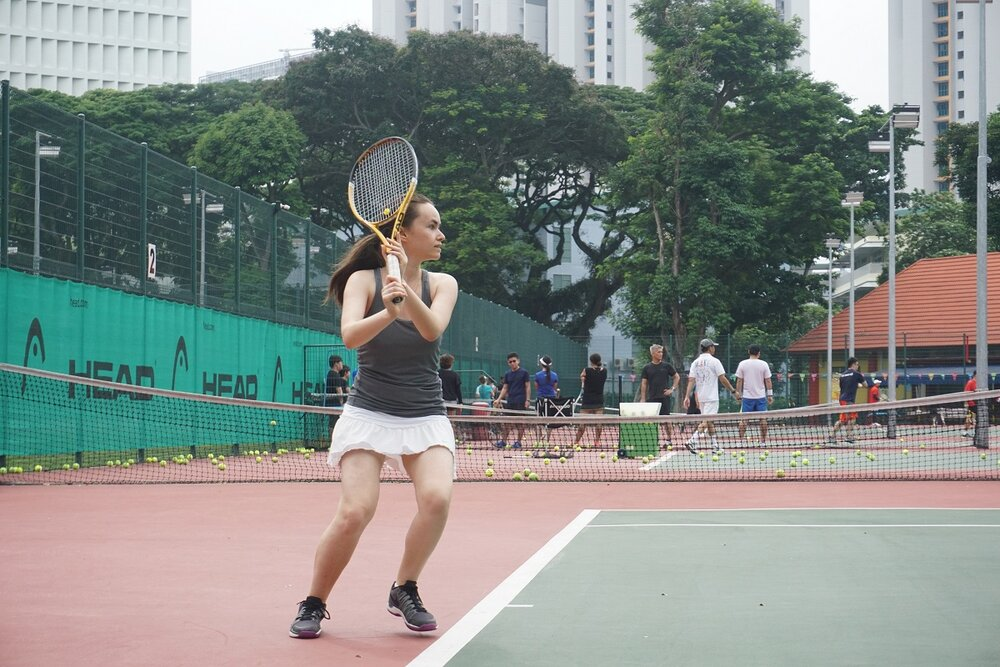
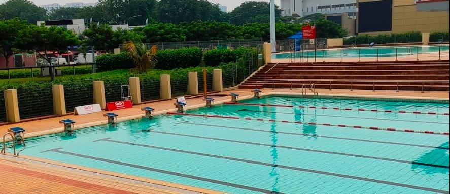
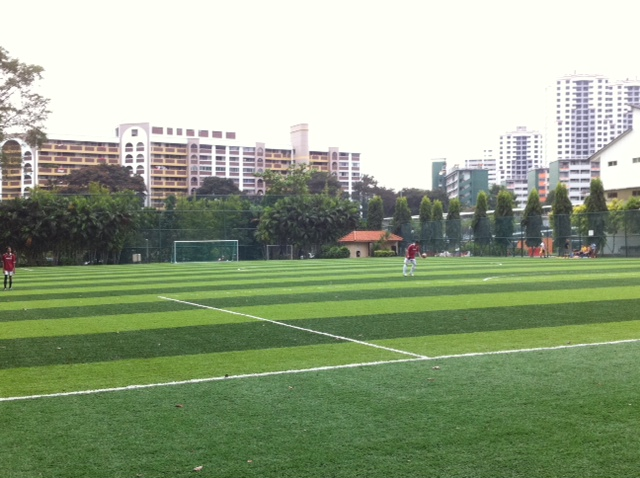
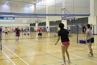

Jalan Besar Sport Centre, formerly known as Jalan Besar Sport and Recreation Centre, operates the Jalan Besar
Swimming Complex, Stadium, Farrer Park Tennis Centre and Field, Kallang Basin Swimming Complex, Bendemeer Secondary School hall and
field. Besides serving as home ground of our national team during the renovation of the National
Stadium, Jalan Besar hosted the Asian Youth Games (2009), and the Youth Olympics Games (2010), which brought many of the young audience
their closest experience of the Kallang roar.

1) Jalan Besar Stadium
Jalan Besar Stadium is a public stadium which has 1 synthetic football pitch and a seating capacity of
approximately 7100. It has been used to host many famous football matches and is known to be the birthplace of football in Singapore.
It is not available for public booking.

2) Jalan Besar Swimming Complex
Jalan Besar Swimming Complex is a swimming complex consisting of 1 Wading Pool, 1 Teaching Pool and 1
Competition Pool.
Operating Hours:
Mon, Wed, Thu, Fri, Sat, Sun & PH: 6.30am - 9.45pm
Tuesday: 3.00pm - 9.45pm
Weekly Maintenance:
Tuesday – Morning to 3pm
Organised classes:
Weekday - 12pm to 6pm
Weekend - 9am to 6pm
Lap swim for general public:
Weekday - 9am to 12pm
Daily - 6.30am & 7.45am / 6.15pm to 9.45pm

3) Farrer Park Field
Farrer Park Field is a public sport field consisting of 1 rugby field and 1 soccer field, both made up of real grass.
4) Farrer Park Tennis Centre
Farrer Park Tennis Centre is a tennis centre with 8 tennis courts and 2 tennis walls.
Operating Hours:
7am - 7pm ( Monday - Sunday)

5) Kallang Basin Swimming Complex
Kallang Basin Swimming Complex is a swimming complex consisting of a competition pool, training pool, and
wading pool. The swimming pools are great for swimming classes and for recreational activities.
Operating Hours:
Monday, Tuesday, Thursday, Friday, Saturday and Sunday – 6.30am to 9.45pm
Wednesday - 3:00pm to 9.45pm
Weekly Maintenance:
Wednesday – Morning to 3pm
Organised classes:
Weekday - 12pm to 6pm
Weekend - 9am to 6pm
Lap swim for general public:
Weekday - 9am to 12pm
Daily - 6.30am & 7.45am / 6.15pm to 9.45pm

6) Bendemeer Secondary School Field
This school field is within the school compounds of Bendemeer Secondary School and it is made of artificial grass. It is usually not open to public on weekdays, because of the students' classes and co-curricular activities. 
7) Bendemeer Secondary School Hall
This hall is within the school compounds of Bendemeer Secondary School and has 4 badminton courts available for public booking. It is usually not open to public on weekdays, because of the students' classes and co-curricular activities. 
For rates of facilities, click here.
Jalan Besar Stadium and Jalan Besar Swimming Complex
Address: 100 Tyrwhitt Road S(207542)
By MRT:
East West Line: 6 minutes walk from Lavender MRT
North East Line: 7 minutes walk from Farrer Park MRT
Downtown Line: 10 minutes walk from Jalan Besar MRT or 12 minutes walk from Bendemeer MRT
By bus:
Aft Allenby Road (Stop ID: 07319): 23, 64, 65, 66, 67, 130, 139, 147, 857 - 2 minutes walk
Bef Tai Hoe Hotel (Stop ID: 07231): 21, 125, 130, 141 - 4 minutes walk
Bef Kallang Bahru (Stop ID: 07361): 13, 67, 133, 141, 145 - 3 minutes walk
Farrer Park Field and Farrer Park Tennis Centre
Field address: 3 Rutland Rd S(218254)
Tennis Centre address: 1 Rutland Road S(218252)
By MRT:
North East Line: 9 minutes walk from Farrer Park MRT or 13 minutes walk from Little India MRT
By bus:
Farrer Park Tennis Ctr (Stop ID: 50351): 131 - 2 minutes walk
Parish of Christ Church (Stop ID: 50019): 56, 57, 166, 851, 980 - 3 minutes walk
Kallang Basin Swimming Complex
Address: 23 Geylang Bahru Ln S(339628)
By MRT:
Downtown Line: 5 minutes walk from Geylang Bahru MRT
By bus:
Kallang Basin Swim Cmplx (Stop ID: 60069): 23, 966 - 1 minute walk
Blk 73 (Stop ID: 60221): 26, 61, 107, 140, 853 - 4 minutes walk
Bendemeer Secondary School
Address: 1 St Wilfred Rd S(327919)
By MRT:
North East Line: 10 minutes walk from Boon Keng MRT
By bus:
Blk 15 (Stop ID: 60251): 140 - 2 minutes walk
Opp Bendemeer Pri Sch (Stop ID: 60141): 13, 23, 31, 64, 65, 66, 125, 133, 140, 147, 857, 985 - 6 minutes walk